24 Nov 2022
Évaluer sur l’ensemble test
Modèles testés sur la saison régulière
| Saison Reguliere 2019-2020 |
|
| 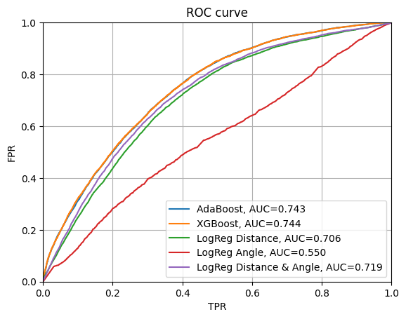 |
 |
| 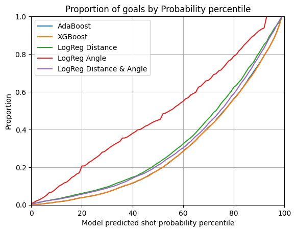 |
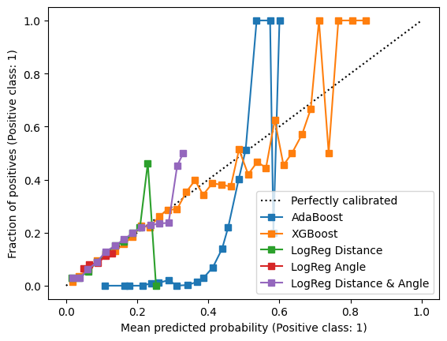 |
Par rapport aux résultats obtenus par l’évaluation test on voir des différences variée selon les différents modèle. Surprenamment on voit une croissance légère pour Adaboost et XGBoost de AUC et plus logiquement une decroissance, faible, de AUC pour les modèle de Logistic Regression. XGBoost et Adaboost on une AUC similaire avec XGBoost ayant rattraper le déficite et XGBoost a une plus fort certitude et variation de probabilité. Ces deux modèles performent de façon similaire sur ces données test que sur les données de validation et entre eux, avec un petit avantage du XGBoost. Les modèles de regression logistic géneralisent aussi plutôt bien.
Saison des playoffs 2019-2020
| Test sur les playoffs 2019-2020 |
|
| 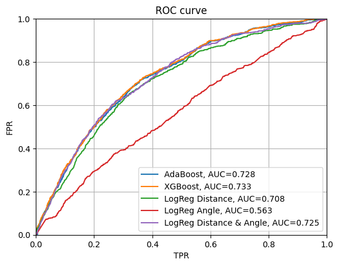 |
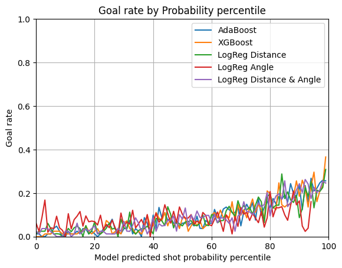 |
| 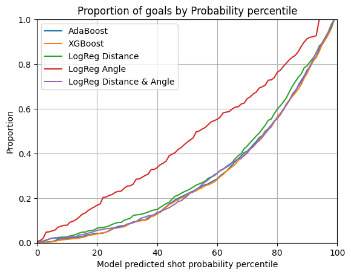 |
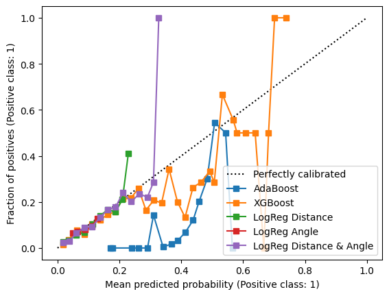 |
Par rapport aux données obtenus sur la saison régulière on observe une décroissance net de l’AUC pour les modèles plus complexes et une augmentation pour les regression logistiques. De plus, à l’exception du modèle utilisant seulement les angles de tir (qui avait été précédemment remarqué comme étant moins performant) ils suivent tous les 4 une courbe similaire pour le taux de tirs prédits. Finalement, la régression logistique considérant les angles et la distance se distingue comme étant plus fiable que pour d’autres données. On voit donc que les modèles d’Adaboost et XGBoost perfoment un peu moins bien que sur les données des saisons régulières mais généralisent, mais que la regression logistique considérant la distance et l’angle est surprenamment performant dans le cas d’une réel généralisation.
23 Nov 2022
Évaluation Préliminaire
Notre technique d’évaluation s’est résumé en un processus à deux étapes. D’abords, nous essayons plusieurs modèles différents sans ajustage d’hyper-paramètres.
Ceci nous permet de courvrir un large éventail de technique sans trop perdre de temps sur des solution peu prometteuses.
Puis nous conservons les modèles un sont dans un écart de 10% de performance ROC-AUC du meilleur modèle out-of-the-box.
| Modèle |
Comet link |
ROC-AUC |
| KNN |
url |
.606 |
| Decision Tree |
url |
.537 |
| Random Forest |
url |
.692 |
| AdaBoost (best) |
url |
.728 |
| Naive Bayes |
url |
.714 |
| Quadratic Discriminant Analysis |
url |
.714 |
| XGBoost |
url |
.720 |
Le meilleur modèle semblait de loin être AdaBoost, nous avons donc élu celui-ci comme le seul
Nos graphiques pour chaque modèle sont enregistré dans Comet.ml sous assets & Artifacts > images > plots.svg. Voici un extrait du meilleur modèle AdaBoost et du pire modèle de Decision Tree
| AdaBoost Best Model |
|
ROC  |
Goal Rate  |
Goal Cumulative Sum  |
Calibration  |
| Decision Tree Worst Model |
|
| Ces modèle n’a pas de probabilitée |
|
ROC  |
Calibration  |
Recherche d’Hyper Paramètres
Comet.ml
| Parameter |
Values |
| base learner max depth |
[1,2,3] |
| base learner |
Decision Treee Clf |
| learning rate |
[0.1, 1, 10] |
| n estimators |
[25, 50, 75] |
Notre meilleure modèle s’avère être:
{
'adaboost__base_estimator': DecisionTreeClassifier(max_depth=3),
'adaboost__learning_rate': 0.1,
'adaboost__n_estimators': 75
}
avec un ROC-AUC de .739 ce qui est une faible augmentation de +.002.
Stratified Sampling
Comet.ml
Notre dernière tentative est de stratifier nos exemples d’entrainement à travers les années afin d’avoir une meilleur représentation de nos performances
Nos performances n’ont pas augmenté
22 Nov 2022
XGBoost sur Angle & Distance
Comet.ml
| XGBoost |
|
| 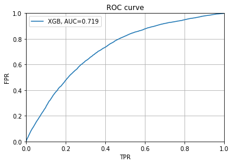 |
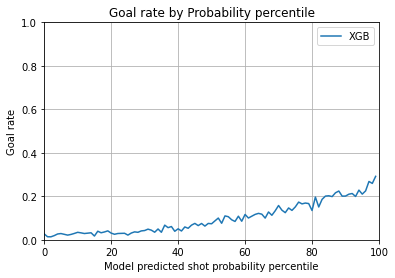 |
 |
 |
On peut voir qu’XGBoost obtiens des performances similaire en terme d’AUC. Par contre, nous pouvons facilement voir que les graphiques de calibration montrent qu’XGBoost tends à preédire différentes probabilitées tandisque la régression logistique prédit beaucoup plus souvent des probabilitées faibles. Nous pouvons donc déterminer que le modèle XGBoost est meilleur puisque nous voulons modéliser la probabilitée d’un tir.
Optimisation d’Hyper-paramètres XGBooost
Comet.ml
On peut voir que notre modèle est beaucoup plus performant sur la courbe de calibration et parvient à bien prédire la probabilitée de plusieurs événements. Il est tout de même faible autour de .7 de probabilitée. Les autres métriques sont assez similaires.
Pour nos expériences, nous procédons à un gridsearch naif sur les paramètres les plus populaires. Notre meilleur modèle est enregistré dans Comet. Nous utilisons sklearn.Pipeline et sklearn.GridSearchCV afin d’entrainer et d’évaluer nos modèles.
Ceci nous permet de faire une validation croisée et d’approximer efficacement nos performances.
Voici notre grille d’hyper-paramètres:
| Parameter |
Values |
| learning rate |
[0.2, 0.01, 0.001] |
| depth |
[3, 6, 10] |
| n estimators |
[50, 75, 100] |
Notre meilleure modèle s’avère être:
{
'xgb_model__eval_metric': 'logloss',
'xgb_model__learning_rate': 0.2,
'xgb_model__max_depth': 3,
'xgb_model__min_child_weight': 1,
'xgb_model__n_estimators': 100,
'xgb_model__objective': 'binary:logistic'
}
avec un ROC-AUC de .737
Nous pourrions améliorer nos résultats en utilisant des méthodes de recherche telle que vues en classe comme les recherche bayésiennes ou aléatoires.
Sélection de Caractéristiques
Comet.ml
Nous utilisons une technbique de filtrage qui utilise notre algorithme XGBoost. Nous entrainons nootre modèle sur toutes les caractéristiques et nous enlevons celle ayant le moins hait score d’importance.
Le score d’importance de caractéristique est une mesure relative du nombre de fois qu’une caractéristique est utlisée afin de faire un split dans un arbre. Ce n’est pas la métrique la plus élégante, mais c’est assez pour nous suffire.
Ainsi notre processus est de :
- Entrainer le modèle sur les caractéristiques
- Évaluer la performance ROC-AUC
- Identifier la caractéristique avec la plus faible importance
- Re-faire l’étape 1 sans la caractéristique la moins importante
- Arrêter si notre ROC-AUC baisse de plus de 1%
De toutes les caractéristiques que nous avions, nous éléminons rebound et gardons celles en gras:
- shot_distance
- shot_angle
- dist_prev_event
- time_lapsed_prev_event_in_seconds
- game_secs
- rebound
Voici le graphique d’importance des caractéristique:
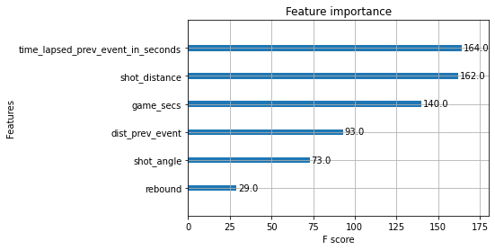
| XGBoost Less Features |
|
 |
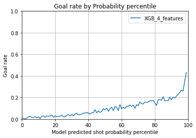 |
| 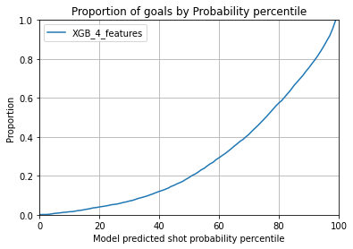 |
 |
21 Nov 2022
Caracteristiques Créées
Expérience WPG V WSH
Caracteristiques issue de Ingé I
goal:Est un but (0 ou 1)empty_net: Filet vide (0 ou 1, vous pouvez supposons que les NaN sont 0)game_secs: Secondes de jeu (Game seconds)period: Période de jeu (Game period)x_coords, ‘y_coords’: Coordonnées (x,y, colonnes séparées)shot_distance: Distance de tir (Shot distance)shot_angle: Angle de tir (Shot angle)shot_type: Type de tir (Shot type)
Fondée sur l’evenement précédent:
prev_type: Dernier type d’événement (Last event type)prev_x_coords, ‘prev_y_coords’: Coordonnées du dernier événement (x, y, colonnes séparées)prev_datetime: Temps de l’evenement précédenttime_lapsed_prev_event_in_seconds: Temps écoulé depuis le dernier événement (secondes)dist_prev_event: Distance depuis le dernier événement (Distance from the last event)rebound: Rebond (bool) : Vrai si le dernier événement était aussi un tir, sinon Falseangle_change: Changement d’angle de tir: Inclure seulement si le tir est un rebond, sinon 0.speed: Vitesse
Autres
season: Saisongame_starttime, ‘game_endtime’: Moment de début et de fin du jeu (format datetime: date, heure, minute, secondes)game_id: Code/Id du jeudatetime: Moment de l’évenementoffense_team_id, ‘offense_team_name’, ‘offense_team_tricode’: Informations de l’équipe offensive (Id, Nom, Tricode, colonnes séparées)shooter_name: Nom du tireurshooter_id: Id du tireurgoalie_name: Nom du gardiengoalie_id: Id du gardienperiod_time: Temps en secondes depuis le debut de la periodestrength_shorthand, ‘strength_even’, ‘strength_powerplay’ : One-Hot-Encoding (1 si vrai 0 si faux) de la force en nombre des equipes
20 Nov 2022
Régression Logistique Simple
On remarque que notre classificateur obtiens une bonne performance, soit .90 d’accuracy. Pourtant, lorsqu’on observe les résultats, On remaruqe que 100% des prédictions sont de la classe 0 dû à un d.balancement dans le jeu de donnée d’entraînement.
De ces graphes, on peut déduire que la distance au but est nécessaire afin d’obtenir de bonnes performances. Le modèle qui contiens uniquement l’angle se différencie à peine du baseline aléatoire.
On peut aussi voir qu’utilise l’angle et la distance est un peu supérieur à la distance seule.
Pour faire ces conclusions, nous nous basons surtout sur la courbe ROC ainsi que la métrique AUC qui sera utilisée pour nos évaluations de modèles.
La courbe de calibration montre que nos modèles ne prédisent la classe 0 avec une probabilitée très faible.
Les courbes de goal rate montrent que nos modèles avec la distance battent des performances aléatoires.
Voici les liens vers nos expériences Comet.ml: